TABLE OF CONTENTS
1. How to use the program
2. How to add extra characters to the key
3. How to edit the cipher
4. How to save current best key
5. How to open a saved key
6. How to save the text
7. How to switch language
8. How to change process priority (system resources used)
9. How to lock a character to a symbol (and unlock)
10. How to merge symbols and simplify the cipher
11. Word plug
12. Excluding letters from symbols
13. Changing the maximum allowable failure
14. Changing the number of random swaps on a key after a failure
15. Changing the revert period
16. Transposing the cipher text
17. Performing polyalphabetic analysis (Vignere ect...)
______________________________________________________________________
1. How to use the program
1. Open the program
2. Select File>Open Cipher (Alternatively Ctrl+O)
3. Browse to the ascii file that contains the cipher, click on the file, and then click the "Open" button
4. Select Key>Init Key (Alternatively Ctrl+I) and select "OK" (this will give you a standard frequency key).
5. Now you can select the "start" button and the main window
6. The program will run until it finds what it considers an optimal solution
7. The Start/Stop buttons do precisely what they say
8. The reset button internally resets the solver back to the beginning
______________________________________________________________________
2. How to add extra characters to the key
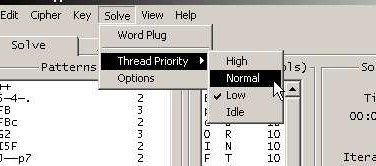
1. Select Solve>Options
2. You should see a text box labeled "Additional Key Letters"
3. Add any extra characters that you want the solver to consider to this text box
4. Uncommon characters make great "Additional Key Letters"
5. Click "OK", the new settings take effect immediately
______________________________________________________________________
3. How to edit the cipher
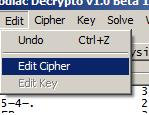
1. Select Edit>Edit Cipher
2. A basic text editor will open up containing your cipher, do not worry about spacing, the program automatically
removes extra spaces.
3. Make desired changes to cipher
4. Click File>Save
______________________________________________________________________
4. How to save the current best key
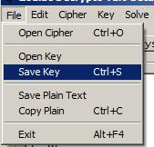
1. Select File>Save Key (Alternatively Ctrl+S)
2. Browse to the desired save directory
3. Give your key file an appropriate name and click save
______________________________________________________________________
5. How to open a saved key
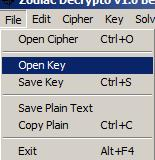
1. Select File>Open Key
2. Browse to the directory that contains the key file
3. Click the file and click the "Open" button
4. This essentially gives the program the state as when you saved the file
______________________________________________________________________
6. How to save the plain text
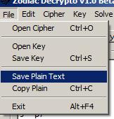
1. Select>Save Plain Text
2. Browse to the desired save directory
3. Give your key file an appropriate name and click save
4. If you are interested in preserving the current solution, you may want to save the key along side with the plain text
______________________________________________________________________
7. How to switch the solving language
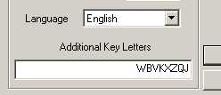
1. Select Solve>Options
2. In the "Misc Options" section you should see a drop down list labeled "Language"
3. Select your desired language and click "OK"
4. The settings take effect immediately
______________________________________________________________________
8. How to change the system resources the program uses (How much it slows your system)
1. Select Solve>Thread Priority
2. You should see a list of priorities, High being the most system intensive, idle being the least intensive
3. Select your desired priority and a check-mark should appear next to it
______________________________________________________________________
9. How to lock a character to a symbol (and unlock)
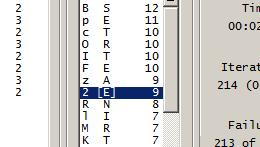
1. A character-symbol combination will lock by double clicking (Alternatively by selecting and Ctrl+L)
2. Square brackets will appear around a locked symbol
3. You can also lock a character-symbol combination by highlighting it and select Key>Lock Symbol
4. You can unlock by double clicking or repeating step 3 and selecting Key>Unlock Symbol (Alternatively by selecting and Ctrl+U)
5. You can lock and unlock all symbols by select Key>Lock All or Unlock All
______________________________________________________________________
10. How to merge symbols and simplify the cipher
If you suspect that two symbols represent the same plain-text character, it is beneficial to the solver to merge those characters
together. In general, the fewer the symbols the easier it is to solve (if its homophonic). The downfall may be that the merging of
symbols destroys the natural expected frequencies between plain characters and cipher characters.
To use this feature:
1. Select Cipher>Merge Symbols (Alternatively Ctrl+M)
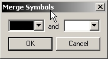
2. Select the two symbols you would like to merge in each of the drop downs
3. Click "OK" and the symbols will be automatically merge
If you would like the program decide which symbols are the best to merge you can use the simplify feature.
To use this feature:
1. Select Cipher>Simplify
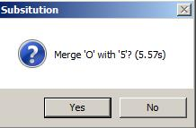
2. It may take 30 or more seconds, but once the program determines which symbols to merge, it will report them to you and
give you the option to merge them.
______________________________________________________________________
11. Using the word-plug feature
The word-plug feature takes a word as input and attempts to place that word in an optimal location within the cipher.
It automatically adjusts the key when it places the word and locks those character-symbol combinations. This is a more
advanced feature that takes practice using. It is good to test it out on practice ciphers. Just because it places a word, it doesn't
mean that the word it in the actual correct solution.
To use the feature:
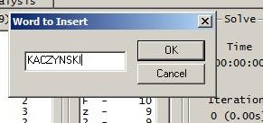
1. Select Solve>Wordplug (Alternatively Ctrl+W)
2. Type in the word that you want the word-plugger to place
3. Click "OK" and it will automatically be placed
______________________________________________________________________
12. Excluding letters from symbols
Excluding letters allows you to prevent a symbol from taking on a certain letter. This feature is usefull for controlling the behavior of symbols.
To use the feature:
1. Right click the desired symbol in the key area and select "Exclude Letters" (Alternatively Shift+Ctrl+X)
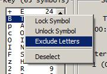
2. Type in all of the letters that you would like to be excluded from that symbol
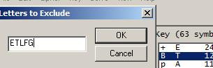
3. Click "OK" and your changes will take effect
______________________________________________________________________
13. Changing the maximum allowable failure
This will allow the program more time to work its way out of local maxima when attempting to solve a cipher.
To use the feature:
1. Select Solve>Options
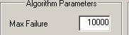
2. Change the value located in the "Max Failures" textbox to your desired value
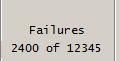
3. Click "OK" and your changes will take effect (you should notice the failure number is updated on the "Solve" tab)
______________________________________________________________________
14. Changing the number of random swaps on a key after a failure
This will also help the program more time to work its way out of local maxima when attempting to solve a cipher.
To use the feature:
1. Select Solve>Options
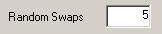
2. Change the value located in the "Random Swaps" textbox to your desired value
3. Click "OK" and your changes will take effect
______________________________________________________________________
15. Changing the revert period
The revert period is how many iterations to perform before reverting back to the previous best key which is also important
to getting unstuck from local maxima.
To use the feature:
1. Select Solve>Options
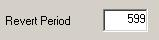
2. Change the value located in the "Revert Period" textbox to your desired value
3. Click "OK" and your changes will take effect
______________________________________________________________________
16. Transposing the cipher text
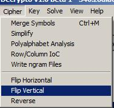
1. Select Cipher and "Flip Horizontal" or "Flip Vertical" or "Reverse"
2. Your change should take effect immediately
______________________________________________________________________
17. Performing polyalphabetic analysis (Vignere ect...)
This feature is useful for analysing polyalphabetic ciphers. This feature generates a graph with key length on the x-axis and index
of coincidence on the y-axis. Vignere ciphers tend to have a peak index of coincidence on the correct key length.
To use the feature:
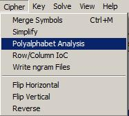
1. Select Cipher>Polyalphabet Analysis
2. Put in a max key length and select "OK"
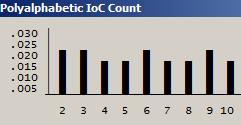
3. You should now see a graph